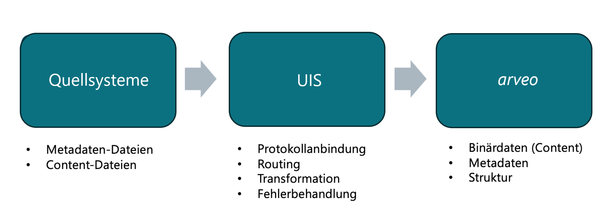

Einsatzbereich
Der Universal Import Service (UIS) ermöglicht den Import verschiedener Eingangsdateien aus dem Dateisystem nach arveo. Dazu werden definierte Verzeichnisse auf den Eingang von Dateien überwacht. Anhand der konfigurierten Routen und Verarbeitungsschritte werden Metadaten aufbereitet und auf arveo-Attribute gemappt. Schließlich werden die Content-Dateien (Dokumente) mit den aufbereiteten Attributen in arveo abgelegt. Ein typisches Beispielszenario ist:
-
Eingang von CSV-Dateien in ein Verzeichnis
-
Der UIS erkennt die Datei und verarbeitet sie anhand der Definition
-
Der UIS übergibt die Dateien und die aufbereiteten Metadaten an arveo
Die vereinfachte Logik dahinter ist „Lese Datei → transformiere Metadaten → sende an UIS-Endpunkt“.
Der Einsatzbereich erstreckt sich von im Tagesgeschäft anfallenden Dateiimporten bis hin zur Übernahme von Massendokumenten bei Datenmigrationen.
Ausgangssituation in arveo-Architekturen
Die arveo-Plattform ist typischerweise Teil einer verteilten, serviceorientierten Architektur, in der verschiedene Systeme zusammenspielen:
-
Fachanwendungen (z.B. SAP, HR-Systeme, CRM)
-
Eingangskanäle (Filesystem)
-
Verarbeitungsservices (hier: UIS)
-
Zielsystem: arveo als führendes ECM/DMS-System
Der Universal Import Service (UIS) übernimmt hierbei die Rolle als:
-
Import- und Verarbeitungsinstanz
-
Integrationspunkt für unterschiedliche Eingangskanäle
-
Orchestrator für Importprozesse
Die zentrale Aufgabe des UIS besteht darin, heterogene Eingangsdaten strukturiert, skalierbar und wartbar in arveo zu überführen. Eine typische Zielarchitektur lässt sich wie folgt darstellen:

Aufbau des UIS
Der UIS basiert auf Apache Camel, das im Kontext des UIS als standardisierte Integrations- und Orchestrierungsschicht innerhalb eines Microservices verstanden werden kann. Camel übernimmt die technische Umsetzung von Integrationsflüssen, während der UIS die fachliche Verarbeitung und arveo die Persistierung der Binär- und Metadaten übernehmen.
Der Mehrwert bei der Verwendung von Camel besteht hauptsächlich in der Entkopplung von Eingangskanälen. Der UIS muss somit nicht selbst eine Vielzahl von Protokollen und Integrationen unterstützen, sondern kann auf die standardisierten Mittel von Camel zurückgreifen. Dadurch können projektspezifischer Individualcode reduziert und die Stabilität und Wartbarkeit erhöht werden.
Der Dienst überwacht konfigurierbare Verzeichnisse auf zu importierende Dateien und stellt Plugin-Schnittstellen für CsvLineMapper und FileMapper bereit.
-
CsvLineMapper werden verwendet, um aus einer Zeile einer CSV-Datei eine oder mehrere arveo-Entitäten zu erstellen.
-
FileMapper erfüllen dieselbe Aufgabe für beliebige Dateien.
Für beide Anwendungsfälle wird eine konfigurierbare Standard-Mapper-Implementierung mitgeliefert, die für die meisten Importszenarien ausreichen sollte. Sind darüberhinausgehende Implementierungen nötig, stehen dafür die Plugin-Schnittstellen zur Verfügung.
Der Dienst bietet einige allgemeine Einstellungen, die für alle Mapping-Konfigurationen gelten. Verschiedene Konfigurationsoptionen finden für die Camel-Komponenten Anwendung. Die für den Dateiimport verwendeten Camel-Routen nutzen einen URI-Parameter zur Konfiguration des Routenstarts. Dies ermöglicht es, die Camel-Komponente für den Start der Route anhand des URI-Schemas auszuwählen und zu konfigurieren. Für jedes Verzeichnis, aus dem Dateien importiert werden sollen, muss eine URI konfiguriert werden. Die Schlüssel in den Konfigurations-Maps definieren die IDs der Camel-Routen.
Anwendung und Konfiguration
Dieser Leitfaden richtet sich an technische Consultants, die den Universal Import Service für konkrete Importvorhaben konfigurieren. Es wird keine Entwicklung vorausgesetzt. Die beschriebenen Szenarien basieren auf der bestehenden Produktdokumentation und den Systemtests.
Der Service liest Dateien aus konfigurierten Eingangsverzeichnissen, wandelt Metadaten in arveo-Attribute um und legt Dokumente oder Container in arveo an. Die Konfiguration erfolgt in YAML-Dateien.
Der Service kann verschiedene Arten von Quellen (csv, csf, filesytem, ..) verarbeiten, die als Szenarien bezeichnet werden. Bei der folgenden Konfiguration sind entsprechende Schlüsselwörter zu beachten.
Grundprinzip
Jeder Import besteht aus zwei Teilen:
-
Eine Route legt fest, wo der Service Quelldateien findet.
-
Eine Mapper-Konfiguration legt fest, wie die gelesenen Daten nach arveo übertragen werden.
Die Route-ID verbindet beide Teile. Im folgenden Beispiel ist csv-kundenakten die Route-ID. Derselbe Name muss unter
csv und unter generic-csv-mapper.settings verwendet werden.
universal-import-service:
csv:
csv-kundenakten:
uri: "file:///data/import/csv?antInclude=**/*.csv&moveFailed=.error"
statistics: "file:///data/import/csv/statistics"
generic-csv-mapper:
settings:
csv-kundenakten:
type-definition-name: kundenakteDie wichtigsten URI-Parameter für dateibasierte Routen sind:
| Parameter | Bedeutung |
|---|---|
|
Verzeichnis, aus dem importiert werden soll. |
|
Filter für Unterverzeichnisse, die verarbeitet werden sollen, zum Beispiel |
|
Filter für Unterverzeichnisse, die ausgeschlossen werden sollen, zum Beispiel |
|
Filter für Dateinamen, die ausgeschlossen werden sollen, zum Beispiel |
|
Zielordner für Dateien, die erfolgreich verarbeitet wurden, zum Beispiel |
|
Zielordner für Dateien, die nicht erfolgreich verarbeitet wurden, zum Beispiel |
|
Es werden auch Unterverzeichnisse durchsucht. |
|
Dateien werden nach dem Import nicht gelöscht. |
|
Die Quelldatei bleibt im Eingangsordner liegen. Das ist vor allem für Test- oder Kontrollszenarien hilfreich. |
Die URI folgt dem Apache-Camel-Format für File-Endpunkte. Weitere Parameter wie Include-/Exclude-Filter,
Verschiebeverhalten, Polling-Intervalle oder Locking sind in der
Apache Camel File Component Dokumentation beschrieben.
Für Importkonfigurationen sollten nur Parameter verwendet werden, die im Zielbetrieb fachlich abgestimmt sind. Besonders
delete, move, moveFailed, noop, readLock und Filterparameter beeinflussen, ob Quelldateien nach dem Import
erhalten bleiben, verschoben oder gelöscht werden.
Komplexere Importkonstellationen
Oft sollen verschiedene Importkonstellationen implementiert werden. z.B. unterschiedliche Quellen in dasselbe / oder unterschiedliche Archive.
In einer YAML- Datei können beliebig viele Routen konfiguriert werden. Somit kann eine Instanz des Universal Import Service mehrere Routen parallel abarbeiten.
In der Route kann mit thread-pool-size: xx angegeben werden, mit wie vielen Thraeds maximal eine Route abgearbeitet werden soll,
Im folgenden Beispiel werden bis zu 10 Threads parallel genutzt.
universal-import-service:
csv:
csv-kundenakten:
uri: "file:///data/import/csv?antInclude=**/*.csv&moveFailed=.error"
statistics: "file:///data/import/csv/statistics"
thread-pool-size: 10
generic-csv-mapper:
settings:
csv-kundenakten:
type-definition-name: kundenakteDer Universal Import Service ist PlugIn fähig. Somit kann sein Verhalten auf kundenspezifische Anforderungen angepasst werden. Ein Plugin wird in Java implementiert und als jar verpackt. Dieses muss beim Start des Universal Import Service im loader.path liegen, welcher zum Start des Universal Import Service angegeben wurde.
Ein PlugIn implementiert das entsprechende Interface z.B. AttributesPreprocessor und implementiert die erforderlichen Methoden um das gewünschte Verhalten zu erzielen.
Erprobte Szenarien für PlugIns sind:
-
Anpassungen der Metadaten
-
Mergen / transformieren von Content vor dem Import
-
nachbearbeitende Schritte nach dem Import
Für die Implementierung von Universal Import Service PlugIns sei auf die entsprechende Entwickler Dokumentation verwiesen (https://eitco.github.io/universal-import-service/latest/index.html).
Welches Szenario verwenden?
| Importfall | Empfohlenes Szenario | Typisches Ergebnis |
|---|---|---|
Eine CSV-Zeile beschreibt genau ein Dokument. |
CSV Simple |
Ein arveo-Dokument je CSV-Zeile, optional mit einem oder mehreren Content-Elementen. |
Eine CSV-Zeile enthält mehrere Dateinamen, die als getrennte Dokumente entstehen sollen. |
CSV Counting |
Mehrere arveo-Dokumente je CSV-Zeile. Der Platzhalter |
Eine CSV-Zeile beschreibt einen fachlichen Datensatz und mehrere Dateien sollen daran hängen. |
CSV Referencing |
Ein Container mit Metadaten und separate Dokumente für die Dateien. Die Dokumente verweisen per Fremdschlüssel auf den Container. |
Saperion-CSF-Dateien sollen importiert werden. |
CSF |
CSV-ähnlicher Import mit zusätzlicher Auswertung des CSF-Headers. |
Dateien liegen direkt in Ordnern und Metadaten stecken im Pfad oder Dateinamen. |
File |
Ein arveo-Dokument je Datei. Attribute werden aus Dateiname, Pfad oder Dateieigenschaften gebildet. |
Saperion-STK-JSON-Export mit Historie soll migriert werden. |
Saperion |
Dokument- oder Containerhistorien mit Versionen und Content aus dem Saperion-Export. |
Gemeinsame Mapper-Einstellungen
Diese Einstellungen kommen in CSV-, CSF- und File-Szenarien regelmässig vor:
| Einstellung | Bedeutung | Typische Werte |
|---|---|---|
|
Ziel-Type-Definition in arveo. |
|
|
Legt fest, ob Dokumente oder Container erstellt werden. |
|
|
Wenn |
|
|
Verhalten, wenn ein Datensatz bereits existiert. |
|
Für Updates, Overwrite und Skip-Erkennung sollte mindestens ein Attribut mit unique-identifier: true konfiguriert
werden. Ohne eindeutige Kennung kann der Service bestehende Objekte nicht verlässlich finden.
Attribute konfigurieren
Attribute werden als Mapping von einem Quellfeld auf ein arveo-Attribut beschrieben.
attributes:
invoice_number:
attribute-name: invoice_number
type: STRING
unique-identifier: true
invoice_date:
attribute-name: invoice_date
type: DATE
date-pattern: "d.M.u"
amount:
attribute-name: amount
type: DOUBLE
number-format:
decimal-separator: ","
grouping-separator: "."
archive:
attribute-name: archive
type: STRING
default-value: recordsDer konkrete Ort des attributes-Blocks hängt vom Importszenario ab:
| Szenario | Pfad in der YAML | Quelle der linken Schlüssel |
|---|---|---|
CSV Simple |
|
Spaltennamen der CSV-Datei. |
CSV Counting |
|
Spaltennamen der CSV-Datei. |
CSV Referencing, Containerattribute |
|
Spaltennamen der CSV-Datei. Diese Attribute werden auf den Container geschrieben. |
CSV Referencing, Dokumentattribute |
|
Spaltennamen der CSV-Datei. Diese Attribute werden auf die einzelnen Dokumente geschrieben. |
CSF |
Wie CSV, aber mit der CSF-Route-ID unter |
Feldnamen aus dem CSF-Datenbereich. |
File |
|
Vordefinierte Datei-Eigenschaften wie |
<route-id> steht für den Namen der Route, zum Beispiel csv-kundenakten, csf-incident oder file-dokumente.
Der Name muss exakt mit dem Schlüssel unter universal-import-service.csv, csf oder file uebereinstimmen.
Der linke Schlüssel, hier zum Beispiel invoice_number, ist das Feld aus der Quelle. Bei CSV und CSF ist das der
Spaltenname. Beim File-Import ist es eine gesammelte Datei-Eigenschaft wie _name oder eine selbst definierte
Eigenschaft.
Unterstützte Typen sind SHORT, INTEGER, LONG, DOUBLE, STRING, BOOLEAN, DATE_TIME, DATE und TIME.
Mehrfachwerte werden mit array: true und einem delimiter konfiguriert.
Leere Werte werden als null übertragen. Soll ein vorhandener Wert bei einem Update aktiv gelöscht werden, kann der
Null-Platzhalter verwendet werden:
attributes:
Formular:
attribute-name: formular
type: STRING
default-value: "$null"Außerdem kann der default-value verwendet werden, um in Felder in arveo mit einem Standardwert zu füllen, die in der CSV.Datei nicht als Spalte enthalten sind.
CSV-Import
CSV-Routen stehen unter universal-import-service.csv. Das CSV-Trennzeichen gilt für alle CSV-Routen und wird über
camel.dataformat.csv.delimiter gesetzt.
universal-import-service:
csv:
csv-kundenakten:
uri: "file:///data/import/csv?antInclude=**/*.csv&moveFailed=.error"
statistics: "file:///data/import/csv/statistics"
camel:
dataformat:
csv:
delimiter: ";"CSV Simple
Simple ist der Standardmodus. Er eignet sich, wenn eine CSV-Zeile ein arveo-Dokument beschreibt.
universal-import-service:
generic-csv-mapper:
settings:
csv-kundenakten:
type-definition-name: kundenakte
conflict-resolution-strategy: UPDATE_ATTRIBUTES
skip-empty-documents: true
simple:
content:
csv-field-name: filename
content-path: "/data/import/content"
position-mappings:
0: content
attributes:
customer_id:
attribute-name: customer_id
type: STRING
unique-identifier: true
created_at:
attribute-name: created_at
type: DATE_TIME
date-time-pattern: "u-M-d H:m:s"
zone-id: UTCcsv-field-name nennt die CSV-Spalte mit Dateinamen. content-path ist der Ordner, in dem diese Dateien liegen, wenn
die CSV nur Dateinamen und keine vollständigen Pfade enthält. position-mappings ordnet die Dateiliste Content-
Elementen zu. Die erste Datei hat Position 0.
CSV Counting
Counting eignet sich, wenn eine CSV-Zeile mehrere Dateien enthält und jede Datei ein eigenes Dokument werden soll.
universal-import-service:
generic-csv-mapper:
settings:
csv-anlagen:
type-definition-name: attachment
mode: COUNTING
skip-empty-documents: true
counting:
content:
csv-field-name: filename
delimiter: ","
content-path: "/data/import/content"
attributes:
source_id:
attribute-name: source_id
type: STRING
suffix: "_${contentElementNumber}"
unique-identifier: truedelimiter trennt mehrere Dateinamen innerhalb derselben CSV-Zelle. $+{contentElementNumber}+ beginnt bei 1 und kann
in prefix, suffix oder default-value genutzt werden.
CSV Referencing
Referencing eignet sich, wenn ein fachlicher Datensatz als Container importiert wird und jede Datei als eigenes Dokument an diesen Container angehängt wird.
universal-import-service:
generic-csv-mapper:
settings:
csv-vorgang:
type-definition-name: vorgang_dokument
mode: REFERENCING
conflict-resolution-strategy: UPDATE_ATTRIBUTES
skip-empty-documents: true
referencing:
container-type-definition-name: vorgang
reference-field-name: vorgang_id
content:
csv-field-name: filename
delimiter: ","
content-path: "/data/import/content"
attributes:
case_id:
attribute-name: case_id
type: STRING
unique-identifier: true
document-attributes:
case_id:
attribute-name: case_id
type: STRINGcontainer-type-definition-name ist die Type-Definition für den Container. type-definition-name ist die
Type-Definition für die Dokumente. reference-field-name muss in der Dokument-Type-Definition existieren und den
Container referenzieren können.
CSF-Import
CSF-Dateien sind CSV-ähnliche Saperion-Importdateien mit Header. Der Service liest aus dem Header unter anderem Trennzeichen, Datumsformate, DDC-Namen und Schlüsselfelder. Die Datenzeilen werden anschliessend mit dem generischen CSV-Mapper konfiguriert.
universal-import-service:
csf:
csf-incident:
uri: "file:///data/import/csf?antInclude=**/*.csf&moveFailed=.error"
statistics: "file:///data/import/csf/statistics"
type-name-mappings:
AMV_TBL: incidenttype-name-mappings ordnet Saperion-DDC-Namen aus dem CSF-Header einer arveo-Type-Definition zu. Wenn diese Zuordnung
nicht verwendet wird, muss die Ziel-Type-Definition in der Mapper-Konfiguration angegeben werden.
Die Mapper-Konfiguration liegt wie beim CSV-Import unter generic-csv-mapper.settings, verwendet aber die CSF-Route-ID.
universal-import-service:
generic-csv-mapper:
settings:
csf-incident:
conflict-resolution-strategy: UPDATE_ATTRIBUTES
skip-empty-documents: false
simple:
content:
csv-field-name: "$DOCFILE,$APPFILE"
content-path: "/data/import/csf-content"
position-mappings:
0: docfile
1: appfile
attributes:
SEITEN:
attribute-name: pages
type: INTEGER
ANNR:
attribute-name: arbeitnehmer_nummer
type: STRINGCSF-Schlüsselfelder aus dem Header werden für die Konflikterkennung verwendet. Für fachlich kontrollierte Updates ist es trotzdem empfehlenswert, die relevanten Felder auch in der Konfiguration eindeutig zu dokumentieren.
File-Import
Der File-Import liest einzelne Dateien direkt aus einem Ordner. Metadaten können aus Dateiname, Pfad und Dateieigenschaften gewonnen werden.
universal-import-service:
file:
file-dokumente:
uri: "file:///data/import/files?antInclude=**/*.*&moveFailed=.error"
statistics-export-cron-schedule: "0 */5 * * * ?"
statistics-export-path: "/data/import/files/statistics"
statistics-export-file-name: "$routeId$@$timestamp$.statistics"
generic-file-mapper:
settings:
file-dokumente:
type-definition-name: files
conflict-resolution-strategy: UPDATE_ATTRIBUTES
skip-empty-documents: true
properties:
parent-name:
position-in-path: -2
language:
file-name-regex:
expression: "[-,_]([A-Z]{2})$"
group: 1
attributes:
_name:
attribute-name: file_name
type: STRING
unique-identifier: true
parent-name:
attribute-name: parent_name
type: STRING
language:
attribute-name: language
type: STRINGVordefinierte Datei-Eigenschaften:
| Eigenschaft | Inhalt |
|---|---|
|
Vollständiger Pfad der Datei. |
|
Dateiname inklusive Erweiterung. |
|
Pfad des übergeordneten Ordners. |
|
Dateigrösse in Byte. |
|
Dateierweiterung. |
|
Zeitpunkt der letzten Änderung im ISO-Format. |
Eigene Properties können über Positionen im Pfad, Positionen im Dateinamen oder reguläre Ausdrücke gebildet werden.
Negative Positionen zählen von rechts. position-in-path: -2 steht für den vorletzten Pfadbestandteil.
Saperion-Import
Der Saperion-Import verarbeitet JSON-Dateien aus einem Saperion-STK-Export. Jede JSON-Datei enthält die Revisionen eines Saperion-Dokuments. Der Service kann diese Revisionen als arveo-Historie importieren.
Zuerst wird die Route konfiguriert:
universal-import-service:
saperion:
saperion-simple:
uri: "file:///data/import/saperion?antInclude=**/*.json&moveFailed=.error"
statistics: "file:///data/import/saperion/statistics"Saperion Simple
Simple legt pro Saperion-Dokument ein arveo-Dokument mit Historie an.
universal-import-service:
generic-saperion-mapper:
simple:
saperion-simple:
type-definition: example_v81
document-id-attribute: saperion_id
revision-id-attribute: saperion_revision_id
attribute-field-mappings:
EX8_DOCNR: document_number
EX8_DOCNAME: document_name
EX8_ARCDATE: document_date
EX8_COMMENT: comment
EX8_LANGUAGE: language
variable-mappings:
SYSCLIENTNAME: sys_client_name
SVPARTID: sv_part_id
content-element-position-mappings:
1: contentattribute-field-mappings ordnet Saperion-DDC-Felder arveo-Attributen zu. variable-mappings ordnet Saperion-Variablen
arveo-Variablen zu. content-element-position-mappings ordnet Content aus der Saperion-Struktur Content-Elementen in
arveo zu. Die Positionen beginnen hier bei 1.
Saperion Referencing
Referencing legt einen Container mit Historie und separate Dokumente für die Content-Elemente an.
universal-import-service:
generic-saperion-mapper:
referencing:
saperion-referencing:
type-definition: example_v8_containers
document-type-definition: example_v8_documents
document-id-attribute: saperion_id
revision-id-attribute: saperion_revision_id
reference-field-name: container_id
version-number-array-field-name: version_numbers
attribute-field-mappings:
EX8_DOCNR: document_number
EX8_DOCNAME: document_name
EX8_ARCDATE: document_date
EX8_COMMENT: comment
EX8_LANGUAGE: language
variable-mappings:
SYSCLIENTNAME: sys_client_name
SVPARTID: sv_part_idtype-definition ist die Container-Type-Definition. document-type-definition ist die Type-Definition für die
Content-Dokumente. reference-field-name muss als Fremdschlüssel im Dokumenttyp vorhanden sein.
version-number-array-field-name muss ein Integer-Array-Feld im Dokumenttyp sein. Darin wird gespeichert, in welchen
Containerversionen das jeweilige Dokument verwendet wird.
Validierung vor dem Start
Vor dem Start eines Imports sollte diese Checkliste abgearbeitet werden:
-
Jede Route-ID ist eindeutig und stimmt exakt mit der passenden Mapper-Konfiguration überein.
-
Eingangsordner, Content-Ordner, Statistikordner und
.error-Ordner sind vorhanden oder können vom Service angelegt werden. -
Die Ziel-Type-Definitions existieren in arveo.
-
Alle konfigurierten
attribute-name-Werte existieren in der jeweiligen Type-Definition. -
Content-Elementnamen wie
content,docfileoderappfileexistieren in der Dokument-Type-Definition. -
Datums-, Zeit- und Zahlenformate passen zu den Quelldaten.
-
Für Updates oder Overwrites ist mindestens ein eindeutiges Attribut mit
unique-identifier: truekonfiguriert. -
Die Konfliktstrategie ist fachlich freigegeben.
-
Bei Saperion Referencing existieren Fremdschlüssel- und Versionsnummernfelder mit passenden Typen.
-
Ein Probelauf mit wenigen Dateien wurde durchgeführt und die Statistikdateien wurden geprüft.
Ergebnis kontrollieren
CSV- und CSF-Importe schreiben pro verarbeiteter Datei eine .statistics-Datei in den konfigurierten Statistikordner.
Sie enthält Verarbeitungszeit, Gesamtanzahl, erfolgreiche, fehlgeschlagene und uebersprungene Zeilen.
File-Importe können Statistikdateien periodisch exportieren. Dafür müssen
statistics-export-cron-schedule und statistics-export-path gesetzt sein.
Fehlgeschlagene Eingangsdateien werden in den mit moveFailed konfigurierten Ordner verschoben. Dieser Ordner ist der
erste Anlaufpunkt für fachliche Datenfehler, fehlende Content-Dateien oder nicht passende Formate.
Typische Fehlerbilder
| Symptom | Wahrscheinliche Ursache | Prüfung |
|---|---|---|
Es wird nichts importiert. |
Route findet keine Dateien oder Route-ID passt nicht zur Mapper-Konfiguration. |
|
Datei landet in |
Quelle passt nicht zur Konfiguration oder ein Zielattribut fehlt. |
Log und Statistikdatei pruefen, danach Attributnamen und Typen vergleichen. |
Datumswerte sind leer oder fehlerhaft. |
|
Format anhand einer echten Quellzeile prüfen. |
Updates erzeugen neue Objekte. |
Eindeutige Kennung fehlt oder Quellwert stimmt nicht mit bestehenden Daten überein. |
|
Content fehlt. |
|
Dateinamen in Quelle und Zielordner vergleichen. |
Saperion-Content wird falsch zugeordnet. |
Content-Position oder Referencing-Feld passt nicht zum Zielmodell. |
|
Service konfigurieren und starten
Neben den Import-Routen braucht der Universal Import Service eine Basis-Konfiguration für den Betrieb. Diese
Konfiguration liegt üblicherweise in einer application.yaml, entweder lokal im Arbeitsverzeichnis, im Unterordner
config, über Spring Cloud Config oder über die Deployment-Plattform.
Eine minimale lokale Konfiguration besteht aus:
server:
port: 8080
logging:
file:
name: "logs/universal-import-service.log"
level:
root: INFO
de.eitco: INFODer Service bietet eine Monitoring-Schnittstelle über HTTP(s) an. Der Port, auf dem die Schnittstelle erreichbar ist,
kann mit dem Parameter server.port konfiguriert werden. Mit den Parametern unter logging kann man den Ort der
Logdatei und die Art der protokollierten Meldungen konfigurieren.
Service-Discovery
Der Service muss andere arveo-Services (insbesondere den Content Repository Service) finden, um Dokumente und Container ablegen zu können.
Es gibt zwei unterstützte Betriebsarten:
-
Kubernetes Service-Discovery – wenn der Service in Kubernetes betrieben wird, kann er die Plattform-Service-Discovery verwenden. Die Ziel-Services werden dabei über die Kubernetes-Mechanismen (Services/Endpoints) aufgelöst. Die Kubernetes-Konfiguration der Zielplattform muss mit der Betriebsdokumentation abgeglichen werden.
-
Simple LoadBalancer – in allen anderen Umgebungen (z.B. klassische Installationen auf VMs oder lokale Setups) muss die statische Discovery über den Simple LoadBalancer von Spring Cloud verwendet werden. Dabei wird jede zu verwendende Instanz eines Ziel-Service einzeln eingetragen.
Beispiel: Simple LoadBalancer
Beim Simple LoadBalancer werden die Ziel-Services unter spring.cloud.discovery.client.simple.instances konfiguriert.
Der Schlüssel unter instances ist der logische Service-Name, unter dem der Service angesprochen wird. Für den
Dokumentenimport ist das der content-repository-service:
spring:
cloud:
discovery:
client:
simple:
instances:
content-repository-service:
- uri: "http://127.0.0.1:39001"
metadata:
api-version: 1.0.0uri zeigt auf die Adresse der Ziel-Instanz. Über metadata.api-version wird die passende API-Version des Ziel-Service
angegeben.
Sollen mehrere Instanzen desselben Service für die Lastverteilung genutzt werden, können unter dem Service-Namen mehrere Einträge angegeben werden. Der LoadBalancer verteilt die Aufrufe dann auf die gelisteten Instanzen:
spring:
cloud:
discovery:
client:
simple:
instances:
content-repository-service:
- uri: "http://10.0.0.11:39001"
metadata:
api-version: 1.0.0
- uri: "http://10.0.0.12:39001"
metadata:
api-version: 1.0.0OAuth2
Der Universal Import Service verwendet OAuth2 für gesicherte API-Zugriffe und für technische Aufrufe anderer arveo- Services. Für Consultants sind zwei Blöcke wichtig:
| Block | Zweck |
|---|---|
|
Validiert eingehende Tokens, wenn geschützte Endpunkte des Import Service aufgerufen werden. |
|
Konfiguriert den technischen Client, mit dem der Service andere arveo-Services aufruft. |
Beispiel mit Client-Credentials:
spring:
security:
oauth2:
resourceserver:
jwt:
issuer-uri: "https://keycloak.example.local/realms/arveo"
client:
registration:
keycloak-client-credentials:
provider: keycloak
client-id: "universal-import-service"
client-secret: "${UIS_CLIENT_SECRET}"
authorization-grant-type: "client_credentials"
scope: openid
provider:
keycloak:
issuer-uri: "https://keycloak.example.local/realms/arveo"issuer-uri muss zum Realm der Zielumgebung passen. client-id und client-secret kommen aus dem Identity Provider.
Der technische Client braucht die Berechtigungen, um Dokumente, Container, Content und bei Saperion-Importen auch
Versionen in arveo anzulegen oder zu aktualisieren. Secrets sollten nicht fest in die YAML-Datei geschrieben werden,
sondern über Umgebungsvariablen, Vault oder die Secret-Verwaltung der Plattform bereitgestellt werden.
Startvarianten
Als ZIP-Artefakt enthält der Service eine ausführbare JAR-Datei und einen Windows-Service-Wrapper. Für einen manuellen Start im Installationsverzeichnis reicht:
java -jar universal-import-service.jarSpring Boot liest dabei unter anderem application.yaml im Arbeitsverzeichnis und im Unterordner config. Für eine
explizite externe Konfiguration kann beim Start ein zusätzlicher Konfigurationspfad angegeben werden:
java -jar universal-import-service.jar --spring.config.additional-location=file:./config/Unter Windows kann der mitgelieferte Service-Wrapper verwendet werden. Die Datei universal-import-service.xml
beschreibt den Windows-Dienst und startet die JAR im Installationsverzeichnis. Anpassungen wie Java-Optionen,
Arbeitsverzeichnis oder Logpfad werden dort vorgenommen.
In Container-Deployments werden dieselben YAML-Einstellungen meist über ConfigMaps, Secrets und Umgebungsvariablen
bereitgestellt. Wichtig ist, dass Import-Eingangsordner, Content-Ordner, Statistikordner und .error-Ordner als
persistente Volumes eingebunden sind, wenn Dateien nach einem Neustart erhalten bleiben müssen.